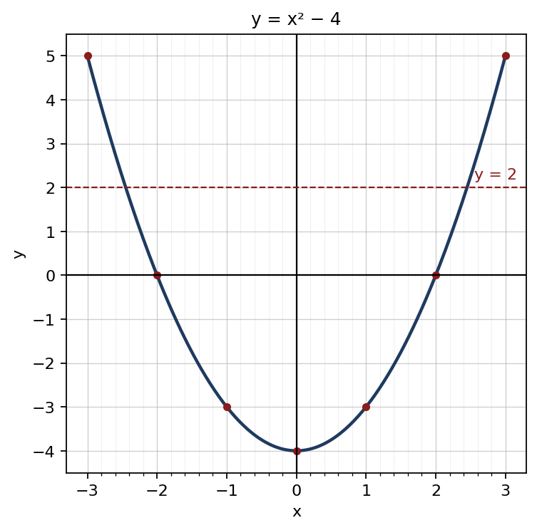
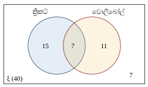

1. √2304: 23 → 42 = 16, ශේෂය 7; 704 → 88 × 8 = 704, ශේෂය 0
අවසාන පිළිතුර: 48
(ලකුණු 2)2. 73 ÷ 76 × 34 = 73 × 67 × 34 = 32
අවසාන පිළිතුර: 32 = 112
(ලකුණු 2)3. (2x)2 − 2(2x)(3) + 32
අවසාන පිළිතුර: 4x2 − 12x + 9
(ලකුණු 2)4. 6x2 − 4x + 3x − 2 = 2x(3x − 2) + 1(3x − 2)
අවසාන පිළිතුර: (3x − 2)(2x + 1)
(ලකුණු 2)5. සංගුණකවල කු.පො.ගු. = 36 ; a3, b3
අවසාන පිළිතුර: 36a3b3
(ලකුණු 2)6. 3(x + 1) − 2(x − 2)(x − 2)(x + 1) = 3x + 3 − 2x + 4(x − 2)(x + 1)
අවසාන පිළිතුර: x + 7(x − 2)(x + 1)
(ලකුණු 2)7. චාප දිග = 120360 × 2 × 227 × 21 = 44 cm ; පරිමිතිය = 44 + 21 + 21
අවසාන පිළිතුර: 86 cm
(ලකුණු 2)8. AB̂C = AĈB = (180° − 40°) ÷ 2 = 70° ; AĈD = 180° − 70°
අවසාන පිළිතුර: 110°
(ලකුණු 2)9. log2 25 + log3 3−2 = 5 + (−2)
අවසාන පිළිතුර: 3
(ලකුණු 2)10. x4 = 81 = 34
අවසාන පිළිතුර: x = 3
(ලකුණු 2)11. Tn = a + (n − 1)d ; T15 = 7 + 14 × 4
අවසාන පිළිතුර: 63
(ලකුණු 2)12. n(A ∪ B) = n(A) + n(B) − n(A ∩ B) ; 27 = 18 + 15 − n(A ∩ B)
අවසාන පිළිතුර: 6
(ලකුණු 2)13. පොලිය = 25 000 × 12100 × 52
අවසාන පිළිතුර: රු. 7 500
(ලකුණු 2)14. මිනිස් දින = 12 × 15 = 180 ; 180 ÷ 18
අවසාන පිළිතුර: දින 10
(ලකුණු 2)15. 2as = v2 − u2
අවසාන පිළිතුර: a = v2 − u22s
(ලකුණු 2)16. 2x − 3x < 1 + 5 ⇒ −x < 6 ⇒ x > −6
අවසාන පිළිතුර: කුඩාම නිඛිල අගය −5
(ලකුණු 2)17. 2072 × 360°
අවසාන පිළිතුර: 100°
(ලකුණු 2)18. 410
අවසාන පිළිතුර: 25
(ලකුණු 2)19. බද්ධ කෝණ: (2x + 10) + (3x − 5) = 180 ⇒ x = 35 ; Ĉ = Â = 2(35) + 10
අවසාන පිළිතුර: 80°
(ලකුණු 2)20. V = πr2h = 227 × 7 × 7 × 10
අවසාන පිළිතුර: 1540 cm3
(ලකුණු 2)| (a) | |
| ① × 3: 9x + 6y = 48 ; ② × 2: 10x − 6y = 28 | 1 |
| එකතු කිරීම: 19x = 76 | 1 |
| x = 4 | 1 |
| ආදේශයෙන්: 12 + 2y = 16 ⇒ y = 2 | 1 |
| (b) | |
| (x − 7)(x + 2) = 0 | 1 |
| x = 7 හෝ x = −2 | 1 |
| (c) | |
| (i) x(x + 3) = 54 ⇒ x2 + 3x − 54 = 0 | 1 |
| (ii) (x + 9)(x − 6) = 0 ⇒ x = 6 (x = −9 පිළිගත නොහැක) | 1 |
| පළල = 6 m, දිග = 9 m | 1 |
| (iii) පරිමිතිය = 2(9 + 6) = 30 m ; කම්බි දිග = 3 × 30 = 90 m | 1 |
මුළු ලකුණු: 10
| (a) | |
| x = −2 ⇒ y = 0 ; x = 1 ⇒ y = −3 (දෙකම නිවැරදි නම්) | 1 |
| (b) | |
| නිවැරදි පරිමාණය සහ අක්ෂ | 1 |
| ලක්ෂ්ය 7 නිවැරදිව ලකුණු කිරීම | 1 |
| සුමට වක්රය | 1 |
 | |
| (c) | |
| (i) අවම අගය = −4 | 1 |
| (ii) x = 0 | 1 |
| (iii) −2 ≤ x ≤ 2 | 1 |
| (iv) x2 − 6 = 0 ⇔ x2 − 4 = 2 ; y = 2 රේඛාව ඇඳ කියවීම: x ≈ ±2.45 (±2.4 – ±2.5 පිළිගන්න) | 1 |
| √6 ≈ 2.45 | 1 |
| (d) | |
| y = x2 − 1 | 1 |
මුළු ලකුණු: 10
| (a) | |
| පරිමාව = 2.2 × 1.4 × 0.5 = 1.54 m3 | 1 |
| = ලීටර් 1540 | 1 |
| (b) | |
| පාද ක්ෂේත්රඵලය = 227 × 0.7 × 0.7 = 1.54 m2 | 1 |
| උස = 1.54 ÷ 1.54 | 1 |
| = 1 m (100 cm) | 1 |
| (c) | |
| 2πrh = 2 × 227 × 0.7 × 1 | 1 |
| = 4.4 m2 | 1 |
| (d) | |
| ඉතිරි උස 0.5 m ; පරිමාව = 1.54 × 0.5 = 0.77 m3 | 1 |
| = ලීටර් 770 | 1 |
| කාලය = 770 ÷ 35 = මිනිත්තු 22 | 1 |
මුළු ලකුණු: 10
| (a) | |
| A, B, C, D, O, P, Q නිවැරදිව ඇතුළත් රූපය | 1 |
| (b) AOP හා COQ ත්රිකෝණවල, | |
| OA = OC (සමාන්තරාස්රයක විකර්ණ එකිනෙක සමච්ඡේදනය වේ) | 1 |
| AÔP = CÔQ (ප්රතිමුඛ කෝණ) | 1 |
| OÂP = OĈQ (AB ∥ DC, ඒකාන්තර කෝණ) | 1 |
| ∴ ΔAOP ≡ ΔCOQ (කෝ.පා.කෝ.) | 1 |
| (c) | |
| අංගසම ත්රිකෝණවල අනුරූප පාද ⇒ AP = CQ | 1 |
| (d) | |
| AB = DC (සම්මුඛ පාද) ⇒ AB − AP = DC − CQ ⇒ PB = DQ | 1 |
| PB ∥ DQ ද වන නිසා, සම්මුඛ පාද යුගලයක් සමාන හා සමාන්තර ⇒ PBQD සමාන්තරාස්රයකි | 1 |
| (e) | |
| විකර්ණ මගින් සමාන්තරාස්රය සම ක්ෂේත්රඵල ත්රිකෝණ 4 කට බෙදේ ; ΔAOB = ¼ × 60 | 1 |
| = 15 cm2 | 1 |
මුළු ලකුණු: 10
| (a) | |
| 30 – 40 | 1 |
| (b) | |
| පන්ති මධ්ය: 15, 25, 35, 45, 55 | 1 |
| fx: 60, 175, 420, 450, 385 | 1 |
| Σfx = 1490 | 1 |
| මධ්යන්ය = 1490 ÷ 40 = 37.25 | 1 |
| (c) | |
| ලකුණු 40 හෝ වැඩි = 10 + 7 = 17 | 1 |
| 1740 × 100 = 42.5% | 1 |
| (d) | |
| නව සිසුන්ගේ මුළු ලකුණු = 10 × 47.25 = 472.5 | 1 |
| මුළු = 1490 + 472.5 = 1962.5 | 1 |
| මධ්යන්ය = 1962.5 ÷ 50 = 39.25 | 1 |
මුළු ලකුණු: 10
| (a) | |
| 22 + 18 − x + 7 = 40 | 1 |
| x = 7 | 1 |
| (b) | |
 | |
| ξ සහ ඡේදනය වන වෘත්ත දෙක | 1 |
| 15, 7, 11 නිවැරදිව | 1 |
| පිටත 7 | 1 |
| (c) | |
| 22 − 7 = 15 | 1 |
| (d) | |
| (i) එකක් පමණක් = 15 + 11 = 26 | 1 |
| P = 2640 = 1320 | 1 |
| (ii) වොලිබෝල් නොකරන = 40 − 18 = 22 | 1 |
| P = 2240 = 1120 | 1 |
මුළු ලකුණු: 10